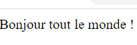

<span>
| Description | Exemple | Résultat de l'exemple |
|---|---|---|
|
La balise <span>est utilisé pour regrouper du texte ou autres éléments dans un bloc de contenu. afin de les mettre en forme (grâce aux attributs class ou id et aux règles CSS). Il doit uniquement être utilisé lorsqu'aucun autre élément sémantique n'est approprié.<span> est très proche de l'élément <div>, mais l'élément <div> est un élément de bloc,alors que <span> est un élément en ligne. |
 |